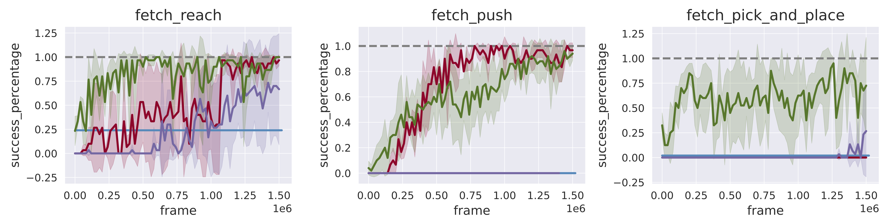
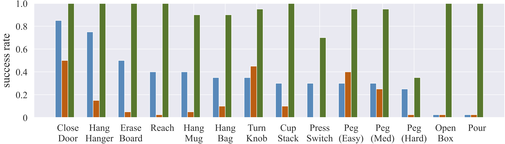
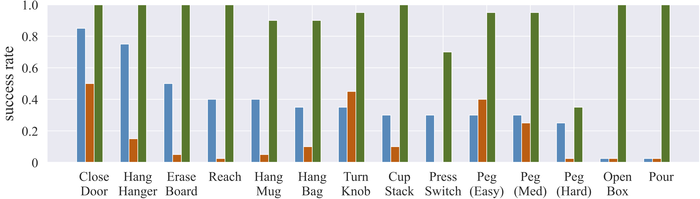

Abstract
Imitation learning holds tremendous promise in learning policies efficiently for complex decision making problems. Current state-of-the-art algorithms often use inverse reinforcement learning (IRL), where given a set of expert demonstrations, an agent alternatively infers a reward function and the associated optimal policy. However, such IRL approaches often require substantial online interactions for complex control problems. In this work, we present Regularized Optimal Transport (ROT), a new imitation learning algorithm that builds on recent advances in optimal transport based trajectory-matching. Our key technical insight is that adaptively combining trajectory-matching rewards with behavior cloning can significantly accelerate imitation even with only a few demonstrations. Our experiments on 20 visual control tasks across the DeepMind Control Suite, the OpenAI Robotics Suite, and the Meta-World Benchmark demonstrate an average of 7.8× faster imitation to reach 90% of expert performance compared to prior state-of-the-art methods. On real-world robotic manipulation, with just one demonstration and an hour of online training, ROT achieves an average success rate of 90.1% across 14 tasks.
Method
Regularized Optimal Transport (ROT) is a new imitation learning algorithm that adaptively combines offline behavior cloning with online trajectory-matching based rewards (top). This enables signficantly faster imitation across a variety of simulated and real robotics tasks, while being compatible with high-dimensional visual observation. On our xArm robot, ROT can learn visual policies with only a single human demonstration and under an hour of online training.

Our main findings can be summarized as:
- ROT outperforms prior state-of-the-art imitation methods, reaching 90% of expert performance 7.8× faster than our strongest baselines on simulated visual control benchmarks.
- On real-world tasks, with a single human demonstration and an hour of training, ROT achieves an average success rate of 90.1% with randomized robot initialization and image observations. This is significantly higher than behavior cloning (36.1%) and adversarial IRL (14.6%) based approaches.
- ROT exceeds the performance of state-of-the-art RL trained with rewards, while coming close to methods that augment RL with demonstrations. Unlike standard RL methods, ROT does not require hand-specification of the reward function.
- Ablation studies demonstrate the importance of every component in ROT, particularly the role that soft Q-filtering plays in stabilizing training and the need for OT-based rewards during online learning.
Simulation Results
Our experiments on 20 tasks across the DeepMind Control Suite, the OpenAI Robotics Suite, and the Meta-World Benchmark, demonstrate an average of 7.8× faster imitation to reach 90% of expert performance compared to prior state-of-the-art methods. Individually, to reach 90% of expert performance, ROT is on average
- 8.7× faster on DeepMind Control tasks
- 2.1× faster on OpenAI Robotics tasks 
- 8.9× faster on Meta-world tasks
Robot Results
We provide evaluation rollouts of ROT on a set of 14 real-world manipulation tasks. With just one demonstration and one hour of online training, ROT achieved an average sucess rate of 90.1% across 14 tasks. This is significantly higher than behavior cloning (36.1%) and adversarial IRL (14.6%) based approaches.
 

Limitations and Future Work
In this work, we have proposed a new imitation learning algorithm, ROT, that demonstrates improved performance compared to prior state-of-the-art work on a variety of simulated and robotic domains. However, we recognize a few limitations in this work: (a) Since our OT-based approach aligns agents with demonstrations without task-specific rewards, it relies on the demonstrator being an ‘expert’. Extending ROT to suboptimal, noisy and multimodal demonstrations would be an exciting problem to tackle. (b) Performing BC pretraining and BC-based regularization requires access to expert actions, which may not be present in some real-world scenarios particularly when learning from humans. Recent work on using inverse models to infer actions given observational data could alleviate this challenge. (c) On robotic tasks such as Peg in box (hard) and Pressing a switch from Fig. 3, we find that ROT’s performance drops substantially compared to other tasks. This might be due to the lack of visual features corresponding to the task success. For example, in the ‘Peg’ task, it is visually difficult to discriminate if the peg is in the box or behind the box. Similarly for the ‘Switch’ task, it is difficult to discern if the button was pressed or not. This limitation can be addressed by integrating more sensory modalities such as additional cameras, and tactile sensors in the observation space.